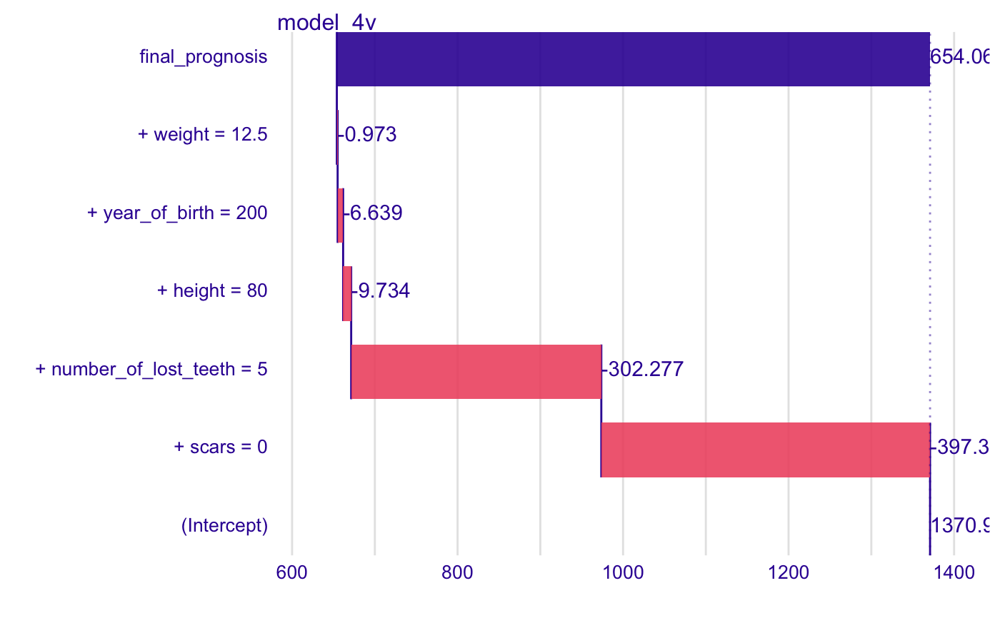
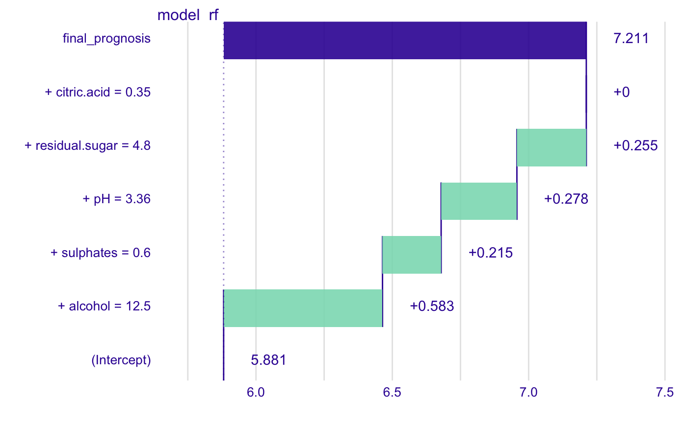
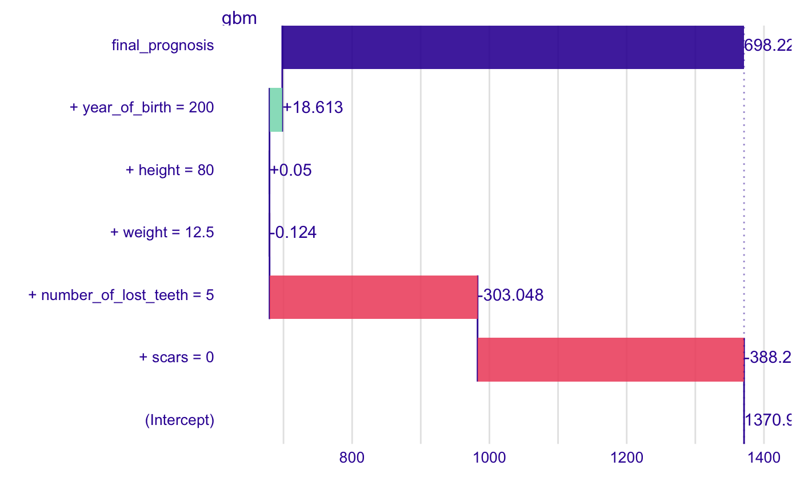

Explanations for a Prediction Breakdown
Explanations for a Prediction Breakdown
prediction_breakdown(explainer, observation, ...)
Arguments
| explainer | a model to be explained, preprocessed by the 'explain' function |
|---|---|
| observation | a new observarvation for which predictions need to be explained |
| ... | other parameters that will be passed to |
Value
An object of the class 'single_prediction_explainer'. It's a data frame with calculated average response.
References
Predictive Models: Visual Exploration, Explanation and Debugging https://pbiecek.github.io/PM_VEE/
Examples
library("breakDown") new.wine <- data.frame(citric.acid = 0.35, sulphates = 0.6, alcohol = 12.5, pH = 3.36, residual.sugar = 4.8) wine_lm_model4 <- lm(quality ~ pH + residual.sugar + sulphates + alcohol, data = wine) wine_lm_explainer4 <- explain(wine_lm_model4, data = wine, label = "model_4v") wine_lm_predict4 <- prediction_breakdown(wine_lm_explainer4, observation = new.wine) head(wine_lm_predict4)#> variable contribution variable_name #> 1 (Intercept) 5.87790935 Intercept #> alcohol + alcohol = 12.5 0.70174103 alcohol #> pH + pH = 3.36 0.05780936 pH #> sulphates + sulphates = 0.6 0.04865885 sulphates #> citric.acid + citric.acid = 0.35 0.00000000 citric.acid #> residual.sugar + residual.sugar = 4.8 -0.03789283 residual.sugar #> variable_value cummulative sign position label #> 1 1 5.877909 1 1 model_4v #> alcohol 12.5 6.579650 1 2 model_4v #> pH 3.36 6.637460 1 3 model_4v #> sulphates 0.6 6.686119 1 4 model_4v #> citric.acid 0.35 6.686119 0 5 model_4v #> residual.sugar 4.8 6.648226 -1 6 model_4vplot(wine_lm_predict4)library("randomForest") wine_rf_model4 <- randomForest(quality ~ pH + residual.sugar + sulphates + alcohol, data = wine) wine_rf_explainer4 <- explain(wine_rf_model4, data = wine, label = "model_rf") wine_rf_predict4 <- prediction_breakdown(wine_rf_explainer4, observation = new.wine) head(wine_rf_predict4)#> variable contribution variable_name #> 1 (Intercept) 5.8803135 Intercept #> alcohol + alcohol = 12.5 0.5850657 alcohol #> sulphates + sulphates = 0.6 0.2070141 sulphates #> pH + pH = 3.36 0.2790537 pH #> residual.sugar + residual.sugar = 4.8 0.2687412 residual.sugar #> citric.acid + citric.acid = 0.35 0.0000000 citric.acid #> variable_value cummulative sign position label #> 1 1 5.880313 1 1 model_rf #> alcohol 12.5 6.465379 1 2 model_rf #> sulphates 0.6 6.672393 1 3 model_rf #> pH 3.36 6.951447 1 4 model_rf #> residual.sugar 4.8 7.220188 1 5 model_rf #> citric.acid 0.35 7.220188 0 6 model_rfplot(wine_rf_predict4)library("gbm") # create a gbm model model <- gbm(quality ~ pH + residual.sugar + sulphates + alcohol, data = wine, distribution = "gaussian", n.trees = 1000, interaction.depth = 4, shrinkage = 0.01, n.minobsinnode = 10, verbose = FALSE) # make an explainer for the model explainer_gbm <- explain(model, data = wine, predict_function = function(model, x) predict(model, x, n.trees = 1000)) # create a new observation exp_sgn <- prediction_breakdown(explainer_gbm, observation = new.wine) head(exp_sgn)#> variable contribution variable_name #> 1 (Intercept) 5.87759265 Intercept #> alcohol + alcohol = 12.5 0.64509278 alcohol #> pH + pH = 3.36 0.16295504 pH #> sulphates + sulphates = 0.6 0.11804114 sulphates #> residual.sugar + residual.sugar = 4.8 0.05397097 residual.sugar #> citric.acid + citric.acid = 0.35 0.00000000 citric.acid #> variable_value cummulative sign position label #> 1 1 5.877593 1 1 gbm #> alcohol 12.5 6.522685 1 2 gbm #> pH 3.36 6.685640 1 3 gbm #> sulphates 0.6 6.803682 1 4 gbm #> residual.sugar 4.8 6.857653 1 5 gbm #> citric.acid 0.35 6.857653 0 6 gbmplot(exp_sgn)exp_sgn <- prediction_breakdown(explainer_gbm, observation = new.wine, baseline = 0) plot(exp_sgn)